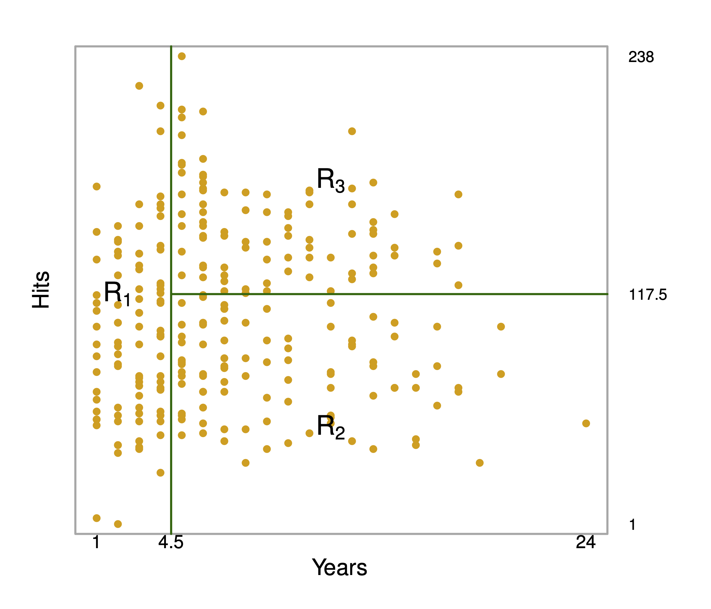

library(titanic) # Datensatz Titanic
#library(rpart) # Berechnung von Entscheidungsbäumen
library(tidymodels)
library(tictoc) # Zeitmessung
library(readr) # rds
library(rpart.plot) # Visualisierung der Bäume10 Entscheidungsbäume
10.1 Lernsteuerung
10.1.1 Lernziele
- Sie können den rpart-Algorithmus erklären
- Sie wissen, wie man Overfitting bei Entscheidungsbäume begrenzen kann
- Sie können Entscheidungsbäume in R berechnen
10.1.2 Literatur
- Rhys, Kap. 7
10.1.3 Vorbereitung
In diesem Kapitel werden folgende R-Pakete benötigt:
10.2 Entscheidungbäume
10.2.1 Anatomie eines Baumes
Ein Baum üå≥ hat (u.a.):
- Wurzel
- Blätter
- Äste
In einem Entscheidungsbaum ist die Terminologie ähnlich, s. Abbildung 10.1. Allgemein gesagt, kann ein Entscheidungsbaum in einem baumähnlichen Graphen visualisiert werden. Dort gibt es Knoten, die durch Kanten verbunden sind, wobei zu einem Knoten genau ein Kanten führt.
Ein Beispiel für einen einfachen Baum sowie die zugehörige rekursive Partionierung ist in Abbildung 10.1 dargestellt; man erkennt \(R=3\) Regionen bzw. Blätter (James u. a. 2021).


In Abbildung 10.1 wird der Knoten an der Spitze auch als Wurzel(knoten) bezeichnet. Von diesem Knoten entspringen alle Pfade. Ein Pfad ist die geordnete Menge der Pfade mit ihren Knoten ausgehend von der Wurzel bis zu einem Blatt. Knoten, aus denen kein Kanten mehr wegführt (“Endknoten”) werden als Blätter bezeichnet. Von einem Knoten gehen zwei Kanten aus (oder gar keine). Knoten, von denen zwei Kanten ausgehen, spiegeln eine Bedingung (Prüfung) wider, im Sinne einer Aussage, die mit ja oder nein beantwortet werden kann. Die Anzahl der Knoten eines Pfads entsprechen den Ebenen bzw. der Tiefe des Baumes. Von der obersten Ebene (Wurzelknoten) kann man die \(e\) Ebenen aufsteigend durchnummerieren, beginnend bei 1: \(1,2,\ldots,e\).
10.2.2 Bäume als Regelmaschinen rekursiver Partionierung
Ein Baum kann man als eine Menge von Regeln, im Sinne von Wenn-dann-sonst-Aussagen, sehen:
Wenn Prädiktor A = 1 ist dann
| Wenn Prädiktor B = 0 ist dann p = 10%
| sonst p = 30%
sonst p = 50%In diesem Fall, zwei Prädiktoren, ist der Prädiktorenraum in drei Regionen unterteilt: Der Baum hat drei Blätter.
Für Abbildung 10.2 ergibt sich eine komplexere Aufteilung, s. auch Abbildung 10.3.1
Kleine Lesehilfe für Abbildung 10.2:
- Für jeden Knoten steht in der ersten Zeile der vorhergesagte Wert, z.B.
0im Wurzelknoten - darunter steht der Anteil (die Wahrscheinlichkeit) für die in diesem Knoten vorhergesagte Kategorie (
0oder1) - darunter (3. Zeile) steht der Anteil der Fälle (am Gesamt-Datensatz) in diesem Knoten, z.B.
100%

Wie der Algorithmus oben zeigt, wird der Prädiktorraum wiederholt (rekursiv) aufgeteilt, und zwar in Rechtecke,s. Abbildung 10.3. Man nennt (eine Implementierung) dieses Algorithmus auch rpart.
Das Regelwerk zum Baum aus Abbildung 10.2 sieht so aus:
## parsnip model object
##
## n= 891
##
## node), split, n, loss, yval, (yprob)
## * denotes terminal node
##
## 1) root 891 342 0 (0.61616162 0.38383838)
## 2) Pclass>=2.5 491 119 0 (0.75763747 0.24236253)
## 4) Age>=6.5 461 102 0 (0.77874187 0.22125813) *
## 5) Age< 6.5 30 13 1 (0.43333333 0.56666667) *
## 3) Pclass< 2.5 400 177 1 (0.44250000 0.55750000)
## 6) Age>=17.5 365 174 1 (0.47671233 0.52328767)
## 12) Pclass>=1.5 161 66 0 (0.59006211 0.40993789) *
## 13) Pclass< 1.5 204 79 1 (0.38725490 0.61274510)
## 26) Age>=44.5 67 32 0 (0.52238806 0.47761194)
## 52) Age>=60.5 14 3 0 (0.78571429 0.21428571) *
## 53) Age< 60.5 53 24 1 (0.45283019 0.54716981)
## 106) Age< 47.5 13 3 0 (0.76923077 0.23076923) *
## 107) Age>=47.5 40 14 1 (0.35000000 0.65000000) *
## 27) Age< 44.5 137 44 1 (0.32116788 0.67883212) *
## 7) Age< 17.5 35 3 1 (0.08571429 0.91428571) *Kleine Lesehilfe: Ander Wurzel root des Baumes, Knoten 1)haben wir 891 Fälle, von denen 342 nicht unserer Vorhersage yval entsprechen, also loss sind, das ist ein Anteil, (yprob) von 0.38. Unsere Vorhersage ist 0, da das die Mehrheit in diesem Knoten ist, dieser Anteil beträgt ca. 61%. In der Klammer stehen also die Wahrscheinlichkeiten für alle Ausprägungen von Y:, 0 und 1, in diesem Fall. Entsprechendes gilt für jeden weiteren Knoten.
Ein kurzer Check der Häufigkeit am Wurzelknoten:
count(titanic_train, Survived)Solche Entscheidungsbäume zu erstellen, ist nichts neues. Man kann sie mit einer einfachen Checkliste oder Entscheidungssystem vergleichen. Der Unterschied zu Entscheidungsbäumen im maschinellen Lernen ist nur, dass die Regeln aus den Daten gelernt werden, man muss sie nicht vorab kennen.
Noch ein Beispiel ist in Abbildung 10.4 gezeigt (James u. a. 2021): Oben links zeigt eine unmögliche Partionierung (für einen Entscheidungsbaum). Oben rechts zeigt die Regionen, die sich durch den Entscheidungsbaum unten links ergeben. Untenrechts ist der Baum in 3D dargestellt.
10.3 Klassifikation
Bäume können für Zwecke der Klassifikation (nominal skalierte AV) oder Regression (numerische AV) verwendet werden. Betrachten wir zunächst die binäre Klassifikation, also für eine zweistufige (nominalskalierte) AV. Das Ziel des Entscheidungsmodel-Algorithmus ist es, zu Blättern zu kommen, die möglichst “sortenrein” sind, sich also möglichst klar für eine (der beiden) Klassen \(A\) oder \(B\) aussprechen. Nach dem Motto: “Wenn Prädiktor 1 kleiner \(x\) und wenn Prädiktor 2 gleich \(y\), dann handelt es sich beim vorliegenden Fall ziemlich sicher um Klasse \(A\).”
Je homogener die Verteilung der AV pro Blatt, desto genauer die Vorhersagen.
Unsere Vorhersage in einem Blatt entspricht der Merheit bzw. der häufigsten Kategorie in diesem Blatt.
10.3.1 Gini als Optimierungskriterium
Es gibt mehrere Kennzahlen, die zur Optimierung bzw. zur Entscheidung zum Aufbau des Entscheidungsbaum herangezogen werden. Zwei übliche sind der Gini-Koeffizient und die Entropie. Bei Kennzahlen sind Maß für die Homogenität oder “Sortenreinheit” (vs. Heterogenität, engl. auch impurity).
Den Algorithmus zur Erzeugung des Baumes kann man so darstellen:
Wiederhole für jede Ebenes
| prüfe für alle Prädiktoren alle möglichen Bedingungen
| wähle denjenigen Prädiktor mit derjenigen Bedingung, der die Homogenität maximiert
solange bis Abbruchkriterium erreicht ist.Ein Bedingung könnte sein Age >= 18 oder Years < 4.5.
Es kommen mehrere Abbruchkriterium in Frage:
- Eine Mindestanzahl von Beobachtungen pro Knoten wird unterschritten (
minsplit) - Die maximale Anzahl an Ebenen ist erreicht (
maxdepth) - Die minimale Zahl an Beobachtungen eines Blatts wird unterschritten (
minbucket)
Der Gini-Koeffizient ist im Fall einer UV mit zwei Stufen, \(c_A\) und \(c_B\), so definiert:
\[G = 1 - \left(p(c_A)^2 + (1-p(c_A))^2\right)\]
Der Algorithmus ist “gierig” (greedy): Optimiert werden lokal optimale Aufteilungen, auch wenn das bei späteren Aufteilungen im Baum dann insgesamt zu geringerer Homogenität führt.
Die Entropie ist definiert als
\[D = - \sum_{k=1}^K p_k \cdot log(p_k),\]
wobei \(K\) die Anzahl der Kategorien indiziert.
Gini-Koeffizient und Entropie kommen oft zu ähnlichen numerischen Ergebnissen, so dass wir uns im Folgenden auf den Gini-Koeffizienten konzentieren werden.
Beispiel
Vergleichen wir drei Bedingungen mit jeweils \(n=20\) Fällen, die zu unterschiedlich homogenen Knoten führen:
- 10/10
- 15/5
- 19/1
Was ist jeweils der Wert des Gini-Koeffizienten?
G1 <- 1 - ((10/20)^2 + (10/20)^2)
G1
## [1] 0.5
G2 <- 1 - ((15/20)^2 + (5/20)^2)
G2
## [1] 0.375
G3 <- 1 - ((19/20)^2 + (1/20)^2)
G3
## [1] 0.095Wie man sieht, sinkt der Wert des Gini-Koeffizienten (“G-Wert”), je homogener die Verteilung ist. Maximal heterogen (“gemischt”) ist die Verteilung, wenn alle Werte gleich oft vorkommen, in diesem Fall also 50%/50%.
Neben dem G-Wert für einzelne Knoten kann man den G-Wert für eine Aufteilung (“Split”) berechnen, also die Fraeg beantworten, ob die Aufteilung eines Knoten in zwei zu mehr Homogenität führt. Der G-Wert einer Aufteilung ist die gewichtete Summe der G-Werte der beiden Knoten (links, \(l\) und rechts, \(r\)):
\[G_{split} = p(l) G_{l} + p(r) G_r\]
Der Gewinn (gain) an Homogenität ist dann die Differenz des G-Werts der kleineren Ebene und der Aufteilung:
\[G_{gain} = G - G_{split}\]
Der Algorithmus kann auch bei UV mit mehr als zwei, also \(K\) Stufen, \(c_1, c_2, \ldots, c_K\) verwendet werden:
\[G= 1- \sum_{k=1}^K p(c_k)^2\]
10.3.2 Metrische Prädiktoren
Außerdem ist es möglich, Bedingung bei metrischen UV auf ihre Homogenität hin zu bewerten, also Aufteilungen der Art Years < 4.5 zu tätigen. Dazu muss man einen Wert identifieren, bei dem man auftrennt.
Das geht in etwa so:
Sortiere die Werte eines Prädiktors (aufsteigend)
Für jedes Paar an aufeinanderfolgenden Werten berechne den G-Wert
Finde das Paar mit dem höchsten G-Wert aus allen Paaren
Nimm den Mittelwert der beiden Werte dieses Paares: Das ist der AufteilungswertAbbildung Abbildung 10.5 stellt dieses Vorgehen schematisch dar (Rhys 2020).
10.4 Regressionbäume
Bei Regressionsbäumen wird nicht ein Homogenitätsmaß wie der Gini-Koeffizient als Optimierungskriterium herangezogen, sondern die RSS (Residual Sum of Squares) bietet sich an.
Die \(J\) Regionen (Partionierungen) des Prädiktorraums \(R_1, R_2, \ldots, R_J\) müssen so gewählt werden, dass RSS minimal ist:
\[RSS = \sum^J_{j=1}\sum_{i\in R_j}(u_i - \hat{y}_{R_j})^2,\]
wobei \(\hat{y}\) der (vom Baum) vorhergesagte Wert ist für die \(j\)-te Region.
10.5 Baum beschneiden
Ein Problem mit Entscheidungsbäumen ist, dass ein zu komplexer Baum, “zu verästelt” sozusagen, in hohem Maße Overfitting ausgesetzt ist: Bei höheren Ebenen im Baum ist die Anzahl der Beobachtungen zwangsläufig klein, was bedeutet, dass viel Rauschen gefittet wird.
Um das Overfitting zu vermeiden, gibt es zwei auf der Hand liegende Maßnahmen:
- Den Baum nicht so groß werden lassen
- Den Baum “zurückschneiden”
Die 1. Maßnahme beruht auf dem Festlegen einer maximalen Zahl an Ebenen (maxdepth) oder einer minimalen Zahl an Fällen pro Knoten (minsplit) oder im Blatt (minbucket).
Die 2. Maßnahme, das Zurückschneiden (pruning) des Baumes hat als Idee, einen “Teilbaum” \(T\) zu finden, der so klein wie möglich ist, aber so gut wie möglich präzise Vorhersagen erlaubt. Dazu belegen wir die RSS eines Teilbaums (subtree) mit einem Strafterm \(s = \alpha |T|\), wobei \(|T|\) die Anzahl der Blätter des Baums entspricht. \(\alpha\) ist ein Tuningparameter, also ein Wert, der nicht vom Modell berechnet wird, sondern von uns gesetzt werden muss - zumeist durch schlichtes Ausprobieren. \(\alpha\) wägt ab zwischen Komplexität und Fit (geringe RSS). Wenn \(\alpha=0\) haben wir eine normalen, unbeschnittenen Baum \(T_0\). Je größer \(\alpha\) wird, desto höher wird der “Preis” für viele Blätter, also für Komplexität und der Baum wird kleiner. Dieses Vorgehen nennt man auch cost complexity pruning. Daher nennt man den zugehörigen Tuningparameter auch Cost Complexity \(C_p\).
10.6 Das Rechteck schlägt zurück
Entscheidungsbäume zeichnen sich durch rechtecke (rekursive) Partionierungen des Prädiktorenraums aus. Lineare Modelle durch eine einfache lineare Partionierung (wenn man Klassifizieren möchte), Abbildung 10.6 verdeutlicht diesen Unterschied (James u. a. 2021).

Jetzt kann sich fragen: Welches Vorgehen ist besser - das rechteckige oder das lineare Partionierungen. Da gibt es eine klare Antwort: Es kommt drauf an. Wie Abbildung 10.6 gibt es Datenlagen, in denen das eine Vorgehen zu homogenerer Klassifikation führt und Situationen, in denen das andere Vorgehen besser ist.
10.7 Tidymodels
Probieren wir den Algorithmus Entscheidungsbäume an einem einfachen Beispiel in R mit Tidymodels aus.
Die Aufgabe sei, Spritverbrauch (möglichst exakt) vorherzusagen.
Ein ähnliches Beispiel, mit analogem Vorgehen, findet sich in dieser Fallstude.
10.7.1 Initiale Datenaufteilung
data("mtcars")
set.seed(42) # Reproduzierbarkeit
d_split <- initial_split(mtcars, strata = mpg)
## Warning: The number of observations in each quantile is below the recommended threshold of 20.
## • Stratification will use 1 breaks instead.
## Warning: Too little data to stratify.
## • Resampling will be unstratified.
d_train <- training(d_split)
d_test <- testing(d_split)Die Warnung zeigt uns, dass der Datensatz sehr klein ist; stimmt. Ignorieren wir hier einfach.
Wie man auf der Hilfeseite der Funktion sieht, wird per Voreinstellung 3/1 aufgeteilt, also 75% in das Train-Sample, 25% der Daten ins Test-Sample.
Bei \(n=32\) finden also 8 Autos ihren Weg ins Test-Sample und die übrigen 24 ins Train-Sample. Bei der kleinen Zahl könnte man sich (berechtigterweise) fragen, ob es Sinn macht, die spärlichen Daten noch mit einem Test-Sample weiter zu dezimieren. Der Einwand ist nicht unberechtigt, allerdings zieht der Verzicht auf ein Test-Sample andere Probleme, Overfitting namentlich, nach sich.
10.7.2 Kreuzvalidierung definieren
d_cv <- vfold_cv(d_train, strata = mpg, repeats = 5, v = 5)
d_cvDie Defaults (Voreinstellungen) der Funktion vfold_cv() können, wie immer, auf der Hilfeseite der Funktion nachgelesen werden.
Da die Stichprobe sehr klein ist, bietet es sich an, eine kleine Zahl an Faltungen (folds) zu wählen. Bei 10 Faltungen beinhaltete eine Stichprobe gerade 10% der Fälle in Train-Sample, also etwa … 2!
Zur Erinnerung: Je größer die Anzahl der Repeats, desto genauer schätzen wir die Modellgüte.
10.7.3 Rezept definieren
Hier ein einfaches Rezept:
recipe1 <-
recipe(mpg ~ ., data = d_train) %>%
step_impute_knn() %>%
step_normalize() %>%
step_dummy() %>%
step_other(threshold = .1)10.7.4 Modell definieren
tree_model <-
decision_tree(
cost_complexity = tune(),
tree_depth = tune(),
min_n = tune()
) %>%
set_engine("rpart") %>%
set_mode("regression")
Wenn Sie sich fragen, woher Sie die Optionen für die Tuningparameter wissen sollen: Schauen Sie mal in die Hilfeseite des Pakets {{dials}}; das Paket ist Teil von Tidymodels.
Die Berechnung des Modells läuft über das Paket {{rpart}}, was wir durch set_engine() festgelegt haben.
Der Parameter Cost Complexity, \(C_p\) oder manchmal auch mit \(\alpha\) bezeichnet, hat einen typischen Wertebereich von \(10^{-10}\) bis \(10^{-1}\):
cost_complexity()
## Cost-Complexity Parameter (quantitative)
## Transformer: log-10 [1e-100, Inf]
## Range (transformed scale): [-10, -1]Hier ist der Wert in Log-Einheiten angegeben. Wenn Sie sich fragen, woher Sie das bittesch√∂n wissen sollen: Naja, es steht auf der Hilfeseite üòÑ.
Unser Modell ist also so definiert:
tree_model
## Decision Tree Model Specification (regression)
##
## Main Arguments:
## cost_complexity = tune()
## tree_depth = tune()
## min_n = tune()
##
## Computational engine: rpartMit tune() weist man den betreffenden Parameter als “zu tunen” aus - gute Werte sollen durch Ausprobieren während des Berechnens bestimmt werden. Genauer gesagt soll das Modell für jeden Wert (oder jede Kombination an Werten von Tuningparametern) berechnet werden.
Eine Kombination an Tuningparameter-Werten, die ein Modell spezifizieren, sozusagen erst “fertig definieren”, nennen wir einen Modellkandidaten.
Definieren wir also eine Tabelle (grid) mit Werten, die ausprobiert, “getuned” werden sollen. Wir haben oben dre Tuningparameter bestimmt. Sagen wir, wir hätten gerne jeweils 5 Werte pro Parameter.
tree_grid <-
grid_regular(
cost_complexity(),
tree_depth(),
min_n(),
levels = 4
)Für jeden Parameter sind Wertebereiche definiert; dieser Wertebereich wird gleichmäßig (daher grid regular) aufgeteilt; die Anzahl der verschiedenen Werte pro Parameter wird druch levels gegeben.
Mehr dazu findet sich auf der Hilfeseite zu grid_regular().
Wenn man die alle miteinander durchprobiert, entstehen \(4^3\) Kombinationen, also Modellkandidaten.
Allgemeiner gesagt sind das bei \(n\) Tuningparametern mit jeweils \(m\) verschiedenen Werten \(m^n\) Möglichkeiten, spricht Modellkandidaten. Um diesen Faktor erhöht sich die Rechenzeit im Vergleich zu einem Modell ohne Tuning. Man sieht gleich, dass die Rechenzeit schnell unangenehm lang werden kann.
Entsprechend hat unsere Tabelle diese Zahl an Zeilen. Jede Zeile definiert einen Modellkandidaten, also eine Berechnung des Modells.
dim(tree_grid)
## [1] 64 3head(tree_grid)Man beachte, dass außer Definitionen bisher nichts passiert ist – vor allem haben wir noch nichts berechnet. Sie scharren mit den Hufen? Wollen endlich loslegen? Also gut.
10.7.5 Workflow definieren
Fast vergessen: Wir brauchen noch einen Workflow.
tree_wf <-
workflow() %>%
add_model(tree_model) %>%
add_recipe(recipe1)10.7.6 Modell tunen und berechnen
Achtung: Das Modell zu berechnen kann etwas dauern. Es kann daher Sinn machen, das Modell abzuspeichern, so dass Sie beim erneuten Durchlaufen nicht nochmal berechnen müssen, sondern einfach von der Festplatte laden können; das setzt natürlich voraus, dass sich am Modell nichts geändert hat.
doParallel::registerDoParallel() # mehrere Kerne parallel nutzen
set.seed(42)
tic() # Stoppuhr an
trees_tuned <-
tune_grid(
object = tree_wf,
grid = tree_grid,
resamples = d_cv
)
toc() # Stoppuhr ausEs bietet sich vielleicht in dem Fall an, das Ergebnis-Objekt als R Data serialized (rds) abzuspeichern:
write_rds(trees_tuned, "objects/trees1.rds")Bzw. so wieder aus der RDS-Datei zu importieren:
trees_tuned <- read_rds("objects/trees1.rds")
Hinweis
Das Zwischenspeichern von Modellobjekten ist praktisch, weil es Rechenzeit spart. Allerdings hat es auch Nachteile: Wenn Sie Ihre Modellspezifikation ändern, müssen Sie auch Ihr gespeichertes Modell aktualisieren. Das vergisst man leicht. Dann hat man falsche Ergebnisse und man wird nicht durch eine Fehlermeldung gewarnt.
Hier oder hier kann man einiges zum Unterschied einer RDS-Datei vs. einer ‚Äúnormalen‚Äù R-Data-Datei nachlesen. Wenn man m√∂chte üòâ.
trees_tunedDie Warnhinweise kann man sich so ausgeben lassen:
collect_notes(trees_tuned)Wie gesagt, in diesem Fall war die Stichprobengröße sehr klein.
10.7.7 Modellgüte evaluieren
collect_metrics(trees_tuned)Praktischerweise gibt es eine Autoplot-Funktion, um die besten Modellparameter auszulesen:
autoplot(trees_tuned)
10.7.8 Bestes Modell auswählen
Aus allen Modellkandidaten wählen wir jetzt das beste Modell aus:
select_best(trees_tuned)Mit diesem besten Kandidaten definieren wir jetzt das “finale” Modell, wir “finalisieren” das Modell mit den besten Modellparametern:
tree_final <-
finalize_workflow(tree_wf, parameters = select_best(trees_tuned))
tree_final
## ══ Workflow ════════════════════════════════════════════════════════════════════
## Preprocessor: Recipe
## Model: decision_tree()
##
## ── Preprocessor ────────────────────────────────────────────────────────────────
## 4 Recipe Steps
##
## • step_impute_knn()
## • step_normalize()
## • step_dummy()
## • step_other()
##
## ── Model ───────────────────────────────────────────────────────────────────────
## Decision Tree Model Specification (regression)
##
## Main Arguments:
## cost_complexity = 1e-04
## tree_depth = 5
## min_n = 2
##
## Computational engine: rpart10.7.9 Final Fit
Jetzt fitten wir dieses Modell auf das ganze Train-Sample und predicten auf das Test-Sample:
tree_fit_final <-
tree_final %>%
last_fit(d_split)
tree_fit_finalHier ist, unser finaler Baum üå≥.
collect_metrics(tree_fit_final)Voilà: Die Modellgüte für das Test-Sample: Im Schnitt liegen wir ca. 4 Meilen daneben mit unseren Vorhersagen, wenn wir RMSE mal so locker interpretieren wollen.
In der Regel ist übrigens RMSE interessanter als R-Quadrat, da R-Quadrat die Güte eines Korrelationsmusters vorhersagt, aber RMSE die Präzision der Vorhersage, also sozusagen die Kürze der Fehlerbalken.
10.7.10 Baum ansehen
Das Ergebnisobjekt von rpart, dem zugrundeliegenden Paketkann man mitextract_fit_engine` bekommen. Ruft man dieses Objekt auf, so sieht man die Wenn-Dann-Regeln des Baumes:
tree_fit_rpart <- extract_fit_engine(tree_fit_final)
tree_fit_rpart
## n= 24
##
## node), split, n, deviance, yval
## * denotes terminal node
##
## 1) root 24 6.269983e+02 18.95833
## 2) hp>=116.5 14 1.062286e+02 15.52857
## 4) hp>=192.5 6 2.218833e+01 13.01667
## 8) disp>=450 2 0.000000e+00 10.40000 *
## 9) disp< 450 4 1.647500e+00 14.32500
## 18) drat>=3.635 1 0.000000e+00 13.30000 *
## 19) drat< 3.635 3 2.466667e-01 14.66667
## 38) drat< 3.22 1 0.000000e+00 14.30000 *
## 39) drat>=3.22 2 4.500000e-02 14.85000 *
## 5) hp< 192.5 8 1.778875e+01 17.41250
## 10) drat< 3.075 4 2.700000e+00 16.10000
## 20) qsec>=17.8 1 0.000000e+00 15.20000 *
## 21) qsec< 17.8 3 1.620000e+00 16.40000
## 42) qsec< 17.5 2 4.050000e-01 15.95000 *
## 43) qsec>=17.5 1 0.000000e+00 17.30000 *
## 11) drat>=3.075 4 1.307500e+00 18.72500
## 22) qsec>=18.6 1 0.000000e+00 17.80000 *
## 23) qsec< 18.6 3 1.666667e-01 19.03333
## 46) qsec< 17.035 1 0.000000e+00 18.70000 *
## 47) qsec>=17.035 2 0.000000e+00 19.20000 *
## 3) hp< 116.5 10 1.255240e+02 23.76000
## 6) hp>=92 7 3.620000e+00 21.70000
## 12) hp>=96 5 2.320000e-01 21.26000
## 24) vs< 0.5 2 0.000000e+00 21.00000 *
## 25) vs>=0.5 3 6.666667e-03 21.43333 *
## 13) hp< 96 2 0.000000e+00 22.80000 *
## 7) hp< 92 3 2.288667e+01 28.56667
## 14) disp>=78.85 2 8.450000e-01 26.65000
## 28) disp>=99.65 1 0.000000e+00 26.00000 *
## 29) disp< 99.65 1 0.000000e+00 27.30000 *
## 15) disp< 78.85 1 0.000000e+00 32.40000 *Mit der Funktion rpart.plot (aus {rpart.plot}) kann man sich einen ansehnlichen Baum anzeigen lassen:
library(rpart.plot)
rpart.plot(tree_fit_rpart)
10.7.11 Nur zum Spaß: Vergleich mit linearem Modell
Ein einfaches lineares Modell, was hätte das jetzt wohl für eine Modellgüte?
lm_model <-
linear_reg()lm_wf <-
workflow() %>%
add_model(lm_model) %>%
add_recipe(recipe1)collect_metrics(lm_fit)lm_fit_final <-
last_fit(lm_wf, d_split)Wie präzise ist die Vorhersage im Test-Sample?
collect_metrics(lm_fit_final)Das lineare Modell schneidet etwas (deutlich?) schlechter ab als das einfache Baummodell.
Man beachte, dass die Modellgüte im Train-Sample höher ist als im Test-Sample (Overfitting).
10.8 Vertiefung
10.9 Aufgaben
Schauen Sie sich mal die Kategorie tree auf Datenwerk an.
Alternativ bietet die Kategorie tidymodels eine Sammlung von Aufgaben rund um das R-Paket Tidymodels; dort können Sie sich Aufgaben anpassen.